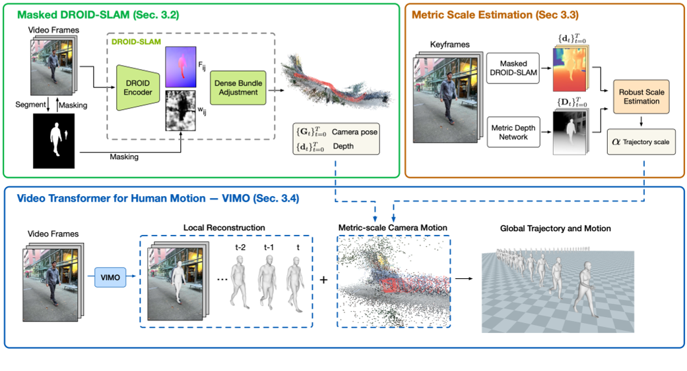
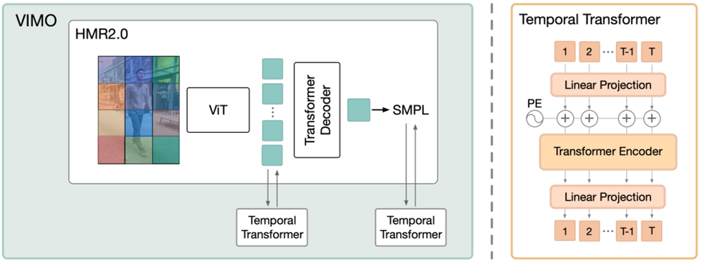

TRAM: Global Trajectory and Motion of 3D Humans from in-the-wild Videos
| 缩写 | 英文 | 中文 |
|---|---|---|
| VIMO | video transformer model | |
| DBA | dense bundle adjustment layer |
核心问题是什么?
TRAM是一种从in-the-wild视频中重建人类全局轨迹和运动的两阶段方法。
提取相机轨迹
已有方法（16）是通过相机运动 + 人物运动 + 人物运动先验 联合优化出相机scale。作者认为由于人物运动先验是使用室内数据训练得到的，因此不能泛化到室外场景中。
作者认为仅通过（排除前景干扰的）背景 + 背景语义足以估计出scale。
人物轨迹恢复
已有方法中，单帧方法恢复较准确，但缺少连续性。而时序方法恢复动作不够准确。原因是基于视频的训练成本高且缺少视频数据。
作者在HMR2.0(预训练的人物模型)上拓展出VIMO模型（增加2个时序transformer），并使用视频数据finetune这个模型。在轨迹信息的相机作为尺度参考系下，回归出人体的运动学身体运动。
效果
通过组合这两个运动，我们实现了世界坐标系中 3D 人体的精确恢复，将全局运动误差比之前的工作减少了 60%。
核心贡献是什么？
- TRAM，从野外视频中恢复人体轨迹和运动，比之前的工作有了很大的改进。
- 证明可以从 SLAM 推断出人体轨迹，并提供技术解决方案，使单目 SLAM 在动态人体存在的情况下具有鲁棒性和公制尺度。
- 提出了视频变换器模型 VIMO，它建立在大型预训练的基于图像的模型之上，并证明这种可扩展的设计实现了最先进的重建性能。
大致方法是什么？

左上：给定一个视频，我们首先使用 DROID-SLAM 恢复相对相机运动和场景深度，并通过双掩蔽对其进行增强（第 3.2 节）。
右上：我们通过优化过程将恢复的深度与左上预测的深度对齐，以估计度量缩放（第 3.3 节）。
底部：我们引入 VIMO 在相机坐标下重建 3D 人体（第 3.4 节），并使用公制尺度相机将人体轨迹和身体运动转换到全局坐标。
detect track video
| 输入 | 输出 | 方法 |
|---|---|---|
| 视频 | 图像 | cv2 |
| 图像 | 人物的bbox。 一张图像上可能有多个bbox，因此每个图像得到的是以图像为单位的bbox list，按照bbox的面积由大到小排序。因为大的bbox更有可能是真实的bbox，而小的bbox更有可能是误检。 | VitDet |
| 图像，人物的bbox | mask | 来自 YOLOv7 [83] 的检测作为Segment Anything Model[32] 模型的提示 |
| bbox | tracking。 VitDet只负责检测人物的bbox，不负责让bbox与人物的ID挂钩。为了得到某个ID的连续的bbox序列，需要进行tracking。得到的是以人为单位的bbox list，以及其相应的mask list。 | DEVA-Track-Anything，跟踪策略为IOU。 |
| 图像 | 公制深度 | ZoeDepth [5] |
Masked DROID-SLAM
输入：单视角视频
输出：相机轨迹
| 输入 | 输出 | 方法 |
|---|---|---|
| 图像或用户输入 | 相机内参 | 相机内参包括focal, center。没有用户指定的情况下，默认center为图像的中心，focal为np.max([h0, w0])。 |
| 图像序列, mask | 估计更准确的的相机内参 | 利用DROID-SLAM的track功能，找到一个可以使droid reprojection error最小的focal. |
| 图像序列，mask，相机内参 | 相机轨迹， disps | Masked DROID-SLAM 在DROID-SLAM的基础上，把图像中被mask为有人的区域的置信度转为0，防止人物的移动对DROID-SLAM造成影响。 |
disps：在立体视觉中，"disparity"（视差）是指同一场景点在左右两个相机图像中的水平像素差。这个差异是由于相机从不同的位置观察同一场景造成的。通过计算视差，可以恢复出场景的深度信息，因为视差与深度是相关的（在固定的相机内参下，视差越大，深度越近；视差越小，深度越远）。
相机移动的情况下，才会有来自同一个场景在不同相机观察位置的视差。因此此算法应用于相机移动的场景。而不能使用于相机静止的场景。
Trajectory Scale Estimation
作者认为，空间scale的推理能力部分体现在深度预测网络中。
第一步的DPOID会输出深度，但深度的单位未知，且与图像保持一致。
第二步中的ZoeDepth也会输出深度，且深度是meter scale的。
| 输入 | 输出 | 方法 |
|---|---|---|
| 图像序列 | pred_depth | 预训练的ZoeDepth |
| disps 来自Masked DROID-SLAM | slam_depth | slam_depth = 1/disp |
通过两个深度的对比，可以得出图像的scale。
但ZoeDepth预测出的深度存在两个问题：
- 特定场景下预测的深度信息不准，例如“天空”
- 时间不连续，部分帧不准，存在突变
为了让这个scale更鲁棒，作者做了以下处理：
- 所有帧独立后，再对所有帧取平均值
- 去掉无处预测不准确的区域
# 通过求解α，将 α ∗ slam_depth 到 to pred_depth， 我们可以将重建场景和相机轨迹重新缩放到公制单位。
# 此函数每一帧独立调用，每次输入为某一帧的slam_depth和pred_depth
def est_scale_hybrid(slam_depth, pred_depth, sigma=0.5, msk=None, far_thresh=10):
""" Depth-align by iterative + robust least-square """
if msk is None:
msk = np.zeros_like(pred_depth)
else:
msk = cv2.resize(msk, (pred_depth.shape[1], pred_depth.shape[0]))
# Stage 1: Iterative steps
# 逐像素地求解scale
s = pred_depth / slam_depth
# 求解scale时排除以下一些像素：
# 1. 前景像素
# 2. 不合理的深度预测，即深度必须为正值
# 3. 远区域像素，因此在这些区域上深度预测不准。仅使用深度预测更可靠的中间区域来解决比例问题。
robust = (msk<0.5) * (0<pred_depth) * (pred_depth<10)
# 取所有像素的scale均值，作为迭代更新的初始值
s_est = s[robust]
scale = np.median(s_est)
# 迭代更新是为了选择更可靠的区域来计算scale。
# 这里只是通过更新区域来更新scale，没有优化的过程。
for _ in range(10):
# 计算scaled slam depth
slam_depth_0 = slam_depth * scale
# 如果scaled slam depth认为某个像素的深度不合理或者不可靠，也会把这个区域排除掉。因为pred_depth不一定可靠。
robust = (msk<0.5) * (0<slam_depth_0) * (slam_depth_0<far_thresh) * (0<pred_depth) * (pred_depth<far_thresh)
s_est = s[robust]
scale = np.median(s_est)
# Stage 2: Robust optimization
robust = (msk<0.5) * (0<slam_depth_0) * (slam_depth_0<far_thresh) * (0<pred_depth) * (pred_depth<far_thresh)
pm = torch.from_numpy(pred_depth[robust])
sm = torch.from_numpy(slam_depth[robust])
def f(x):
loss = sm * x - pm
# Geman-McClure Loss
loss = gmof(loss, sigma=sigma).mean()
return loss
# 迭代更新算出的scale作为迭代优化的初始值
x0 = torch.tensor([scale])
# torchmin.minimize
result = minimize(f, x0, method='bfgs')
scale = result.x.detach().cpu().item()
return scale
为什么在相机移动的情况下，所有帧可以共用一个scale？
答：scale与相机内参决定。相机内参不变的情况下scale不会变。
Video Transformer for Human Motion

想法：利用大型预训练模型中的丰富知识，进行灵活且可扩展的架构设计，其性能可以通过计算和数据不断提高。
做法：
- 通过添加两个时间transformer，将基于图像的 HMR2.0 转换为视频模型。
- 使用视频数据在原始transformer decoder上进行微调
网络输入预处理
| 输入 | 输出 | 方法 |
|---|---|---|
| tracking | chunks | tracking以人为单位组织数据，但是由于数据可能检测错误或者人物出现消失，检测结果是不连续的。但网络要求输入连续数据。因此根据帧ID切段。 |
| 图像，bbox | cropped image |
Transformer
这两个时间transformer使用相同的encoder only架构.
第一个transfomer在图像域（patch token from ViT）传播时间信息。即，先在每个patch上独立地使用ViT transformer encoder进行编码。再把这个编码合起来，在时间维度上进行增加的transformer。两个transformer合起来，相当于一个ST transformer。
第二个transformer在人体运动域传播时间信息。作者认为，先隐空间学习运动模型再回归器出SMPL参数的做法不很合适，因为该隐空间纠缠了许多其他信息，例如形状、相机和图像特征。相比之下，作者建议回归出SMPL参数之后仅对其中的pose部分使用 Transformer 进行编码和解码。因此，本文直接将这种通用架构应用于 SMPLposes{θt,rt}上，并使用 MoCap 数据进行预训练。
b: batch
t: frame
c: channel，或者dim
| 输入 | 输出 | 方法 |
|---|---|---|
| 图像，[(b,t), c=3, h, w] | feature，[(b,t=16), c=1280, h=16, w=12] | 预训练模型vit_huge 得到的是一个二维特征 |
| bbox的center和scale，focal | bbox_info，[(b,t=16), c=3] | CLIFF (Li et al.) bbox feature 一堆magic number，不清楚含义 |
| bbox_info，[(b,t=16), c=3] | bbox_info，[(b,t=16), c=3, h=16, w=12] | 维度上与feature对齐，便于后面的拼接 |
| feature, bbox_info | feature，[(b,t=16), c=1280+3, h=16, w=12] | feature = torch.cat([feature, bb], dim=1)图像特征与bbox特征拼接到一起。因为feature来自于cropped image，没有人在整个画面中的信息。而bbox表示人在画面中的位置，正好弥补了这一点。 |
| feature，[(b t=16) c=1280+3 h=16 w=12] | feature，[(b h=16 w=12) t=16 c=1280+3] | 要在t维度上做transformer，第二个维度必须是t |
| feature，[(b h=16 w=12) t=16 c=1280+3] | feature，[(b h=16 w=12) t=16 c=1280] | st_module |
| feature，[(b h=16 w=12) t=16 c=1280] | feature，[(b t=16) c=1280+3 h=16 w=12] | temporal_attention模块过完以后，又切回原来的顺序 |
| feature，[(b t=16) c=1280 h=16 w=12] | pred_pose, pred_shape, pred_cam | smpl_head，此模块来来自HMR2.0 |
| pred_pose，[(b,t=16),c=24*6] | pred_pose，[b,t=16,c=24*6] | 为再次进行temporal_attention做准备 |
| bbox_info，[(b,t=16),c=3] | bbox_info，[b,t=16,c=3] | 同样也结合包含图像全局信息的bbox |
| pred_pose，[(b,t=16),c=24*6] | pred_pose，[(b,t=16),c=24*6+3] | pred_pose = torch.cat([pred_pose, bb], dim=2) |
| pred_pose，[(b,t=16),c=24*6+3] | pred_pose，[(b,t=16),c=24*6] | motion_module，也是一个temporal_attention模块 |
| pred_pose，[(b,t=16),c=24*6+3] | pred_pose，[b,t=16,c=24*6+3] |
# 基于transformer的时序模块
class temporal_attention(nn.Module):
def __init__(self, in_dim=1280, out_dim=1280, hdim=512, nlayer=6, nhead=4, residual=False):
super(temporal_attention, self).__init__()
self.hdim = hdim
self.out_dim = out_dim
self.residual = residual
self.l1 = nn.Linear(in_dim, hdim)
self.l2 = nn.Linear(hdim, out_dim)
self.pos_embedding = PositionalEncoding(hdim, dropout=0.1)
TranLayer = nn.TransformerEncoderLayer(d_model=hdim, nhead=nhead, dim_feedforward=1024,
dropout=0.1, activation='gelu')
self.trans = nn.TransformerEncoder(TranLayer, num_layers=nlayer)
# Xavier 初始化是一种常用的权重初始化方法，旨在解决深度神经网络训练过程中的梯度消失和梯度爆炸问题。该方法通过根据网络的输入和输出维度来初始化权重，使得前向传播和反向传播过程中的信号保持相对一致的方差。
nn.init.xavier_uniform_(self.l1.weight, gain=0.01)
nn.init.xavier_uniform_(self.l2.weight, gain=0.01)
def forward(self, x):
x = x.permute(1,0,2) # (b,t,c) -> (t,b,c)
# 在channel维度上做MLP，(t=16,b,c=in_dim) -> (t=16,b,c=hdim)
h = self.l1(x)
# 在t维度上叠加位置编码和drop out
h = self.pos_embedding(h)
# nn.TransformerEncoder，6层transformer encoder layer
h = self.trans(h)
# 在channel维度上做MLP，(t=16,b,c=hdim) -> (t=16,b,c=in_dim)
h = self.l2(h)
# 预测残差还是预测feature
if self.residual:
x = x[..., :self.out_dim] + h
else:
x = h
# (t,b,c) -> (b,t,c)
x = x.permute(1,0,2)
return x
生成最终结果
| 输入 | 输出 | 方法 |
|---|---|---|
| pred_shape | pred_shape | VIMO每一帧都会预测一个shape参数，但是人的真实体型是不会变的，所以都统一到一个体型上 |
| pred | pred shape, pred pose, pred_trans | smpl forward |
| pred_cam，相机运动，来自Masked DROID-SLAM scale | pred_camt，相机运动trans pred_camr，相机运动pose，旋转矩阵形式 | |
| pred_cam, pred | verts | 相机视角 + 世界坐标系下的人物 = 相机坐标系下的人物 |
训练与验证
只开源推断代码，没有开源训练代码
数据集
3DPW [81], Human3.6M [24], and BEDLAM [6]
数据增强
- 旋转、缩放、水平翻转、颜色抖动，对一个训练序列进行统一的增强。
- 遮挡。每一帧独立增强。
Loss
- 2D 投影loss
- 3D 重建loss
- SMPL参数loss [?] 只是动作参数？
- mesh重建loss
有效
- 测了几段视频，发现在重建动作的灵活性和准确性上都优于WHAM。应该 模块的作用。
- Masked DROID-SLAM虽然能预测相机运动，但缺少运动的scale。ZoeDepth利用图像中的语义信息可以得到图像的scale。使得相机的位移信息更准确。
缺陷
- 在运动相机下有效，在静止相机下代码会出错。错误来自Masked DROID-SLAM模块。因为Masked DROID-SLAM需要根据不同视角的视差数据来估计深度。
启发
- scale的估计需要一段视频。可以用于HMR之前的标定阶段。
- 算法推断过程为输入连续的16帧的图像，出第8帧图像对应的motion。为了支持流式推理，改成出第16帧对应的motion，其结果与原结果相差不大。
遗留问题
参考材料
- 开源：https://yufu-wang.github.io/tram4d/
- DROID-SLAM：https://blog.csdn.net/huarzail/article/details/130906160
- torchmin.minimize：https://pytorch-minimize.readthedocs.io/en/latest/api/generated/torchmin.minimize.html
- nn.init.xavier_uniform_：https://blog.csdn.net/AdamCY888/article/details/131269857
- SMPLTransformerDecoderHead：https://caterpillarstudygroup.github.io/ReadPapers/28.html